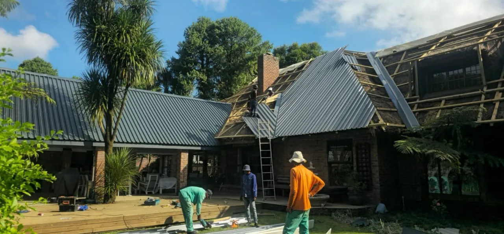

We install, fix, and upgrade Thatch roofs all across Gauteng.
What We Do
More Detail
Steel-based tiles with a stone-coated finish that looks like thatch — without the fire risk or maintenance. Can be installed directly over existing thatch.
We convert your thatch to Chromadek or zinc sheeting — either by over-sheeting or full reconstruction, depending on the condition of your existing structure.
A non-toxic, water-based fire retardant applied by high-pressure spray. We are certified applicators — the certificate issued is recognised for insurance purposes.
Full lightning protection systems installed for thatch and tile roofs. All work is certified and compliant, protecting your structure and electrical systems from strikes.
We offer free consultations and quotes across all of Gauteng.
Get a Free Quote